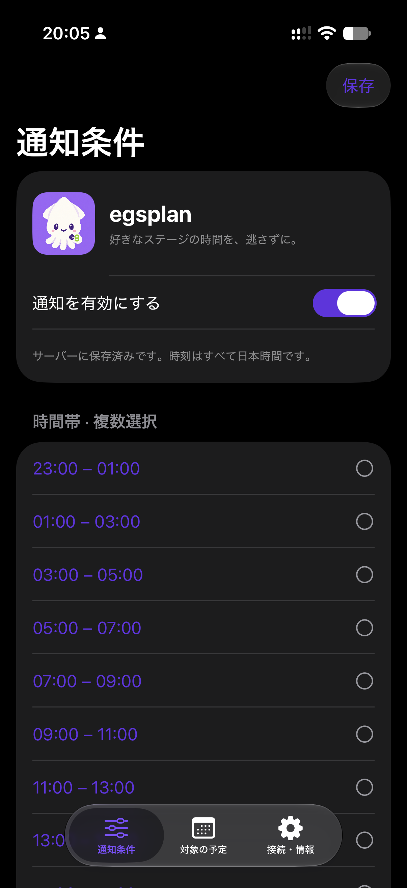
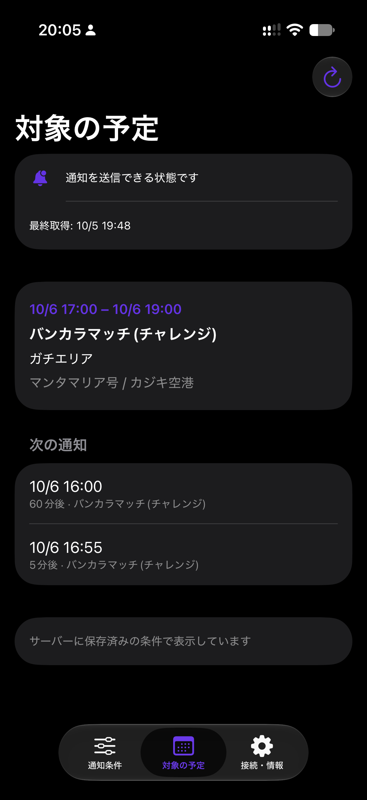

どんなアプリ？
「今夜、好きなステージでガチエリアを遊びたい」。そんなとき、予定表を何度も確認せずに、条件に合う時間を知るためのアプリです。
時間帯・ルール・マッチ・ステージを複数選び、保存すると、一致する予定と次の通知を一覧で確認できます。開始前の通知と、指定した時刻のまとめ通知で、遊ぶ予定を立てやすくします。
ログインや Nintendo アカウントとの連携は不要です。設定は端末ごとに保存され、複数端末での同期には対応していません。
主な機能
- 4つの条件で予定を絞り込み：遊べる時間帯、ルール、マッチ、好きなステージをそれぞれ複数選択。
- 開始前に個別通知：開始1時間前・5分前を選択。両方の通知も使えます。
- 指定時刻にまとめ通知：最大4時刻を設定し、その時刻から24時間以内に始まる取得済みの一致予定をまとめてお知らせ。
- 対象の予定を確認：開始・終了時刻、マッチ、ルール、両ステージ名と、次の通知時刻を表示。
- 保存した条件を引き継ぎ：再起動時にサーバーの保存済み条件を読み込み。通知をオフにして保存しても、対象の予定は確認できます。
画面で見る
提供された開発中の実機スクリーンショットです。画像を選ぶと原寸で開きます。

時間帯を複数選択。下にスクロールすると、ルール・マッチ・ステージ・通知タイミングを設定できます。

保存した条件に一致する対戦枠と、開始1時間前・5分前の通知予定を一覧で確認できます。
2026年10月5日提供。画面の日付・時刻は撮影時点の例で、現在の対戦予定ではありません。「通知を送信できる状態です」は通知先の準備状態を示し、端末での受信を保証する表示ではありません。
基本的な使い方
開発用ビルドでの操作です。現在、一般向けのダウンロードは提供していません。
- 接続を確認する。「接続・情報」の「接続を確認」で通信状態を確認します。開発用ビルドには接続先が設定されています。
- 条件を選ぶ。「通知条件」で通知を有効にし、時間帯・ルール・マッチ・ステージをそれぞれ1つ以上選択します。
- 通知タイミングを選ぶ。開始1時間前・5分前を選ぶか、まとめ通知の時刻を追加します。個別通知とまとめ通知は併用できます。
- 「保存」を押す。右上の「保存」、または画面下部の「通知設定を保存」を押し、保存結果を確認します。iOS の通知許可が表示されたら、通知を受け取るには許可してください。
- 「対象の予定」を開く。一致する予定と「次の通知」を確認します。右上の更新ボタンでも再読み込みできます。
条件の変更は、保存してから反映されます。選択を変えただけでは、対象の予定も通知予約も変わりません。通知を止めるときも「通知を有効にする」をオフにして保存してください。
選べる条件と判定のしくみ
| 時間帯 | 23:00–01:00 から21:00–23:00までの、2時間ごとの12枠。予定の開始時刻で判定します。 |
|---|---|
| ルール | ナワバリバトル、ガチエリア、ガチヤグラ、ガチホコバトル、ガチアサリ |
| マッチ | レギュラーマッチ、バンカラマッチ（チャレンジ／オープン）、Xマッチ |
| ステージ | 対戦ステージ一覧から複数選択。対戦枠の2ステージのうち、少なくとも1つが選択に含まれれば一致します。 |
同じ分類の中では「いずれか」、分類をまたぐと「すべて」の条件で判定します。たとえば「19時または21時の枠」「ガチエリア」「バンカラマッチ（オープン）」「選んだステージのいずれか」をすべて満たす予定が対象になります。
時刻はすべて日本時間（JST）です。23:00–01:00 は翌日にまたがります。空の選択は「すべて」を意味しません。存在しないルールとマッチの組み合わせには一致する予定がありません。対象ステージが含まれていても、毎試合そのステージが選ばれるとは限りません。
通知はいつ届く？
たとえば17:00開始の予定なら、両方の個別通知を選ぶと、次の2回を予約します。
- 16:00開始1時間前
予定を思い出す - 16:55開始5分前
遊ぶ準備をする - 17:00対戦枠が開始
まとめ通知は、指定時刻から24時間以内に始まる取得済みの予定が対象です。一致する予定がない場合は通知しません。未公開の予定は含まず、24時間分が必ず揃うわけではありません。
通知の到着は通信状態、iOS の通知許可、集中モードなどの影響を受けます。設定保存時にすでに通知時刻を過ぎた予定は、遡って通知しません。
利用時に知っておきたいこと
- 予定は取得済みデータを表示します。通常は毎日11:10（日本時間）にサーバーで更新し、不足・失敗時に追加取得します。画面の更新ボタンは保存済みの予定を再読み込みするためのものです。
- 一致なしと取得失敗は別です。「一致する予定はありません」の場合は条件を見直し、変更したら保存します。予定未取得・接続エラーの場合は、通信状態や画面の案内を確認してください。
- 初版の対象外：サーモンラン、イベントマッチ、フェス専用マッチ、曜日指定、複数端末の同期には対応していません。
通知のため、条件・端末の通知先・通知予約を開発者のサーバーに保存します。「接続・情報」からサーバーの登録を削除できます。詳細はegsplan のプライバシー説明をご確認ください。
開発状況
初期実装（0.1.0）を検証中です。アプリ本体とソースコードは非公開で、一般公開・配布は行っていません。公開時期は未定です。
条件の保存・読み込み、対象予定と次の通知の表示、実機でのテスト通知受信を確認しています。通常の条件通知や、設定変更・通知オフ時の実機検証は継続中です。
掲載内容は2026年10月5日時点の実装・仕様と提供画像に基づきます。
データ提供・クレジット
予定データの提供：Splatoon3.ink。データ利用方針に沿い、出典表示・キャッシュ・取得間隔を守り、無料提供を前提に開発しています。
egsplan は個人開発の非公式アプリで、任天堂の公式アプリではありません。Splatoon は任天堂の商標です。アイコンには独自に制作したイカのイラストを使用しています。